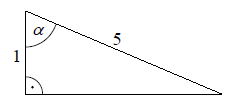

Arkusz 2015 - CKE
Liczba \(15\) jest przybliżeniem z niedomiarem liczby \(x\). Błąd bezwzględny tego
przybliżenia jest równy \(0{,}24\). Liczba \(x\) to
A.\( 14{,}76 \)
B.\( 14{,}80 \)
C.\( 15{,}20 \)
D.\( 15{,}24 \)
D
Punkty \(E = (7,1)\) i \(F = (9,7)\) to środki boków, odpowiednio \(AB\) i \(BC\)
kwadratu \(ABCD\). Przekątna tego kwadratu ma długość
A.\( 4\sqrt{5} \)
B.\( 10 \)
C.\( 4\sqrt{10} \)
D.\( 20 \)
C
Liczba \(\left ( \frac{3+\sqrt{3}}{\sqrt{3}} \right)^2\) jest równa
A.\( 4 \)
B.\( 9 \)
C.\( \frac{3+\sqrt{3}}{3} \)
D.\( 4+2\sqrt{3} \)
D
Liczba \(3^{\frac{9}{4}}\) jest równa
A.\( 3\cdot \sqrt[4]{3} \)
B.\( 9\cdot \sqrt[4]{3} \)
C.\( 27\cdot \sqrt[4]{3} \)
D.\( 3^9\cdot 3^{\frac{1}{4}} \)
B
Funkcja wykładnicza określona wzorem \(f(x)=3^x\) przyjmuje wartość \(6\) dla
argumentu
A.\( x=2 \)
B.\( x=\log_{3}2 \)
C.\( x=\log_{3}6 \)
D.\( x=\log_{6}3 \)
C
Wyrażenie \(16-(3x+1)^2\) jest równe
A.\( (3-3x)\cdot (5+3x) \)
B.\( (15-3x)^2 \)
C.\( (5-3x)\cdot (5+3x) \)
D.\( 15-9x^2 \)
A
Wskaż równość prawdziwą.
A.\( -256^2=(-256)^2 \)
B.\( 256^3=(-256)^3 \)
C.\( \sqrt{(-256)^2}=-256 \)
D.\( \sqrt[3]{-256}=-\sqrt[3]{256} \)
D
Zbiorem rozwiązań nierówności \(\frac{2-x}{3}-\frac{2x-1}{2} \lt x \) jest
przedział
A.\( \left ( -\infty ,\frac{1}{2} \right) \)
B.\( \left ( -\infty ,\frac{1}{14} \right) \)
C.\( \left ( \frac{1}{14},+\infty \right) \)
D.\( \left ( \frac{1}{2},+\infty \right) \)
D
W klasie jest cztery razy więcej chłopców niż dziewcząt. Ile procent wszystkich
uczniów tej klasy stanowią dziewczęta?
A.\( 4\% \)
B.\( 5\% \)
C.\( 20\% \)
D.\( 25\% \)
C
Reszta z dzielenia liczby \(55\) przez \(8\) jest równa
A.\( 4 \)
B.\( 5 \)
C.\( 6 \)
D.\( 7 \)
D
Funkcja \(f\) przyporządkowuje każdej liczbie naturalnej większej od \(1\) jej
największy dzielnik będący liczbą pierwszą. Spośród liczb: \(f(42\)), \(f(44)\), \(f(45)\),
\(f(48)\) największa to
A.\( f(42) \)
B.\( f(44) \)
C.\( f(45) \)
D.\( f(48) \)
B
Rysunek przedstawia ostrosłup prawidłowy czworokątny \(ABCDS\).  Kątem między krawędzią \(CS\) a
płaszczyzną podstawy tego ostrosłupa jest kąt
Kątem między krawędzią \(CS\) a
płaszczyzną podstawy tego ostrosłupa jest kąt
Kątem między krawędzią \(CS\) a
płaszczyzną podstawy tego ostrosłupa jest kąt A.\( DCS \)
B.\( ACS \)
C.\( OSC \)
D.\( SCB \)
B
Wykresem funkcji kwadratowej \(f\) jest parabola o wierzchołku \(W = (5,7)\).
Wówczas prawdziwa jest równość
A.\( f(1)=f(9) \)
B.\( f(1)=f(11) \)
C.\( f(1)=f(13) \)
D.\( f(1)=f(15) \)
A
Jeżeli kąt \(\alpha \) jest ostry i \(\operatorname{tg} \alpha =\frac{3}{4}\), to
\(\frac{2-\cos \alpha }{2+\cos \alpha }\) równa się
A.\( -1 \)
B.\( -\frac{1}{3} \)
C.\( \frac{3}{7} \)
D.\( \frac{84}{25} \)
C
Równanie \((2x-1)\cdot (x-2)=(1-2x)\cdot (x+2)\) ma
dwa rozwiązania. Są to liczby
A.\( -2 \) oraz \(\frac{1}{2}\)
B.\( 0 \) oraz \(\frac{1}{2}\)
C.\( \frac{1}{2} \) oraz \(2\)
D.\( -2 \) oraz \(2\)
B
Dane jest równanie \(3x+4y-5=0\). Z którym z poniższych równań tworzy ono układ
sprzeczny?
A.\( 6x+8y-10=0 \)
B.\( 4x-3y+5=0 \)
C.\( 9x+12y-10=0 \)
D.\( 5x+4y-3=0 \)
C
W trójkącie, przedstawionym na rysunku poniżej, sinus kąta ostrego \(\alpha \) jest
równy 
A.\( \frac{1}{5} \)
B.\( \frac{\sqrt{6}}{12} \)
C.\( \frac{5}{24} \)
D.\( \frac{2\sqrt{6}}{5} \)
D
Tworząca stożka ma długość \(l\), a promień jego podstawy jest równy \(r\).  Powierzchnia boczna tego stożka jest
\(2\) razy większa od pola jego podstawy. Wówczas
Powierzchnia boczna tego stożka jest
\(2\) razy większa od pola jego podstawy. Wówczas
Powierzchnia boczna tego stożka jest
\(2\) razy większa od pola jego podstawy. Wówczas A.\( r=\frac{1}{6}l \)
B.\( r=\frac{1}{4}l \)
C.\( r=\frac{1}{3}l \)
D.\( r=\frac{1}{2}l \)
D
Dane są dwa okręgi o promieniach \(10\) i \(15\). Mniejszy okrąg przechodzi przez
środek większego okręgu. Odległość między środkami tych okręgów jest równa
A.\( 2{,}5 \)
B.\( 5 \)
C.\( 10 \)
D.\( 12{,}5 \)
C
Każdy uczestnik spotkania dwunastoosobowej grupy przyjaciół uścisnął dłoń każdemu z
pozostałych członków tej grupy. Liczba wszystkich uścisków dłoni była równa
A.\( 66 \)
B.\( 72 \)
C.\( 132 \)
D.\( 144 \)
A
W dziewięciowyrazowym ciągu geometrycznym o wyrazach dodatnich pierwszy wyraz jest
równy \(3\), a ostatni wyraz jest równy \(12\). Piąty wyraz tego ciągu jest równy
A.\( 3\sqrt[4]{2} \)
B.\( 6 \)
C.\( 7\frac{1}{2} \)
D.\( 8\frac{1}{7} \)
B
Ciąg \(a_n\) jest określony wzorem \(a_n=(n+3)(n-5)\) dla \(n\ge 1\). Liczba
ujemnych wyrazów tego ciągu jest równa
A.\( 3 \)
B.\( 4 \)
C.\( 7 \)
D.\( 9 \)
B
Rzucamy jeden raz symetryczną sześcienną kostką do gry. Niech \(p_i\) oznacza
prawdopodobieństwo wyrzucenia liczby oczek podzielnej przez \(i\). Wtedy
A.\( 2p_4=p_2 \)
B.\( 2p_6=p_3 \)
C.\( 2p_3=p_6 \)
D.\( 2p_2=p_4 \)
B
Zbiorem rozwiązań nierówności \(ax+4\ge 0\) z niewiadomą \(x\) jest przedział
\((-\infty ,2 \rangle\). Wyznacz \(a\).
\(a=-2\)
Rozwiąż równanie \(\frac{x(x+1)}{x-1}=5x-4\), dla \(x\ne 1\).
\(x=\frac{1}{2}\) lub \(x=2\)
Kwadrat \(K_1\) ma bok długości \(a\). Obok niego rysujemy kolejno kwadraty \(K_2,
K_3, K_4,...\) takie, że kolejny kwadrat ma bok połowę mniejszy od boku poprzedniego kwadratu
(zobacz rysunek).  Wyznacz pole
kwadratu \(K_{12}\).
Wyznacz pole
kwadratu \(K_{12}\).
Wyznacz pole
kwadratu \(K_{12}\).\(\frac{a^2}{2^{22}}\)
W pierścieniu kołowym cięciwa zewnętrznego okręgu ma długość \(10\) i jest styczna
do wewnętrznego okręgu (zobacz rysunek).  Wykaż, że pole tego pierścienia można wyrazić wzorem, w którym nie występują promienie
wyznaczających go okręgów.
Wykaż, że pole tego pierścienia można wyrazić wzorem, w którym nie występują promienie
wyznaczających go okręgów.
Wykaż, że pole tego pierścienia można wyrazić wzorem, w którym nie występują promienie
wyznaczających go okręgów.Uzasadnij, że liczba \(4^{12}+4^{13}+4^{14}\) jest podzielna przez \(42\).
Na trójkącie o bokach długości \(\sqrt{7}, \sqrt{8}, \sqrt{15}\) opisano okrąg.
Oblicz promień tego okręgu.
\(r=\frac{\sqrt{15}}{2}\)
Proste \(l\) i \(k\) przecinają się w punkcie \(A = (0, 4)\). Prosta \(l\) wyznacza
wraz z dodatnimi półosiami układu współrzędnych trójkąt o polu \(8\), zaś prosta \(k\) – trójkąt o
polu \(10\). Oblicz pole trójkąta, którego wierzchołkami są: punkt \(A\) oraz punkty przecięcia
prostych \(l\) i \(k\) z osią \(Ox\).
\(P=2\); punkty przecięcia, to: \((4;0)\) oraz \((5;0)\)
Ala jeździ do szkoły rowerem, a Ola skuterem. Obie pokonują tę samą drogę. Ala
wyjechała do szkoły o godzinie \(7{:}00\) i pokonała całą drogę w ciągu \(40\) minut. Ola wyjechała
\(10\) minut później niż Ala, a pokonanie całej drogi zajęło jej tylko \(20\) minut. Oblicz, o
której godzinie Ola wyprzedziła Alę.
o \(7:20\)
Dane są wierzchołki trójkąta \(ABC\): \(A = (2, 2)\) , \(B = (9, 5)\) i \(C = (3,
9)\). Z wierzchołka \(C\) poprowadzono wysokość tego trójkąta, która przecina bok \(AB\) w punkcie
\(D\). Wyznacz równanie prostej przechodzącej przez punkt \(D\) i równoległej do boku \(BC\).
\(y=-\frac{2}{3}x+\frac{204}{29}\)
Jacek bawi się sześciennymi klockami o krawędzi \(2\) cm. Zbudował z nich jeden
duży sześcian o krawędzi \(8\) cm i wykorzystał do tego wszystkie swoje klocki. Następnie zburzył
budowlę i ułożył z tych klocków drugą bryłę – graniastosłup prawidłowy czworokątny. Wtedy okazało
się, że został mu dokładnie jeden klocek, którego nie było gdzie dołożyć. Oblicz stosunek pola
powierzchni całkowitej pierwszej ułożonej bryły do pola powierzchni całkowitej drugiej bryły i wynik
podaj w postaci ułamka nieskracalnego.
\(\frac{16}{17}\)